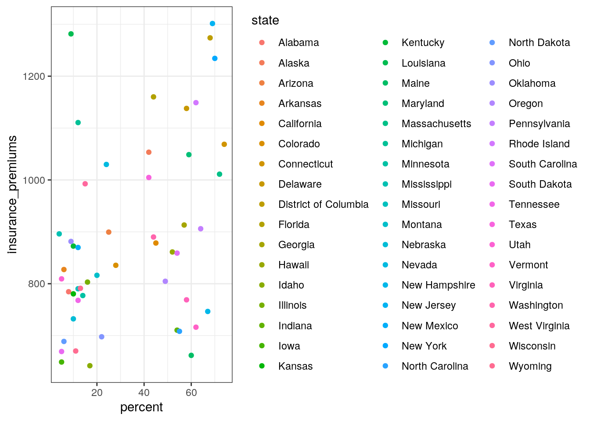
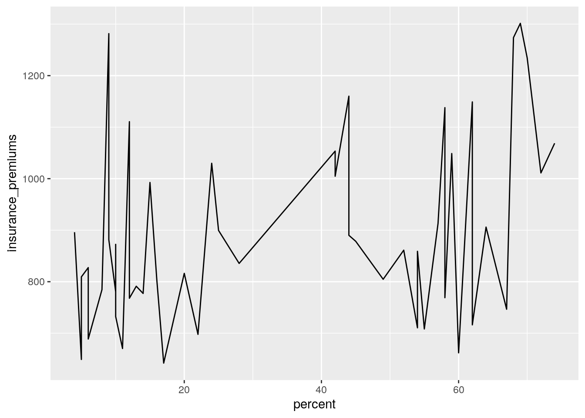
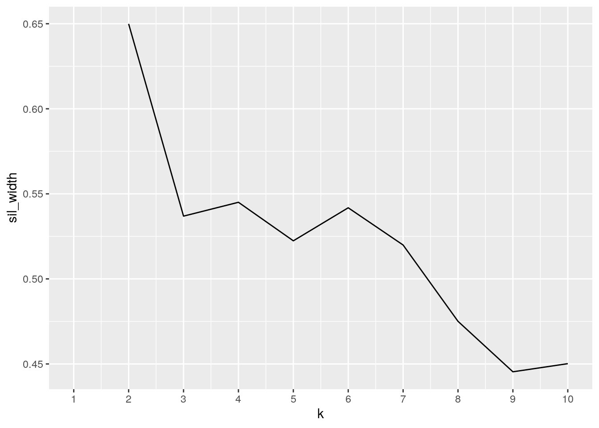

## paste this chunk into the ```{r setup} chunk at the top of your project 1 .Rmd file
knitr::opts_chunk$set(echo = TRUE, eval = TRUE, fig.align = "center", warning = F, message = F,
tidy=TRUE, tidy.opts=list(width.cutoff=60), R.options=list(max.print=100))I decided on two data sets from carData and fivethirtyeight to see if states with a higher percentage of high school graduates who took a SAT have higher insurance premiums. Overall, the variables my joint dataframe have state, Number of drivers involved in fatal collisions per billion miles, insurance_premiums, population, SAT verbal scores, and percent of high school graduates who took the SAT. I choose this as my project because I am currently teaching my bad driver best friend how to drive.
library(fivethirtyeight)## Some larger datasets need to be installed separately, like senators and
## house_district_forecast. To install these, we recommend you install the
## fivethirtyeightdata package by running:
## install.packages('fivethirtyeightdata', repos =
## 'https://fivethirtyeightdata.github.io/drat/', type = 'source')library(carData)
library(tidyverse)## ── Attaching packages ─────────────────────────────────────── tidyverse 1.3.0 ──## ✓ ggplot2 3.3.3 ✓ purrr 0.3.4
## ✓ tibble 3.0.4 ✓ dplyr 1.0.6
## ✓ tidyr 1.1.2 ✓ stringr 1.4.0
## ✓ readr 1.4.0 ✓ forcats 0.5.0## ── Conflicts ────────────────────────────────────────── tidyverse_conflicts() ──
## x dplyr::filter() masks stats::filter()
## x dplyr::lag() masks stats::lag()library(cluster)
df <- subset(bad_drivers, select = -c(perc_no_previous))
df_2 <- cbind( state = df$state,States)
df_j <- left_join(df,df_2)## Joining, by = "state"new_df_j <- subset(df_j,select = c(state,num_drivers,insurance_premiums,pop,SATV,percent))
head(new_df_j)## # A tibble: 6 x 6
## state num_drivers insurance_premiums pop SATV percent
## <chr> <dbl> <dbl> <int> <int> <int>
## 1 Alabama 18.8 785. 4041 470 8
## 2 Alaska 18.1 1053. 550 438 42
## 3 Arizona 18.6 899. 3665 445 25
## 4 Arkansas 22.4 827. 2351 470 6
## 5 California 12 878. 29760 419 45
## 6 Colorado 13.6 836. 3294 456 28These states are SAT scores above the mean SAT score of the USA.
#SD
new_df_j %>% group_by(percent,insurance_premiums) %>% summarise_if(is.numeric,list(sd=sd), na.rm = T)## # A tibble: 51 x 5
## # Groups: percent [37]
## percent insurance_premiums num_drivers_sd pop_sd SATV_sd
## <int> <dbl> <dbl> <dbl> <dbl>
## 1 4 896. NA NA NA
## 2 5 649. NA NA NA
## 3 5 669. NA NA NA
## 4 5 809. NA NA NA
## 5 6 689. NA NA NA
## 6 6 827. NA NA NA
## 7 8 785. NA NA NA
## 8 9 882. NA NA NA
## 9 9 1282. NA NA NA
## 10 10 732. NA NA NA
## # … with 41 more rows#Variance
new_df_j %>% group_by(percent,insurance_premiums) %>% summarise_if(is.numeric,list(var=var), na.rm = T)## # A tibble: 51 x 5
## # Groups: percent [37]
## percent insurance_premiums num_drivers_var pop_var SATV_var
## <int> <dbl> <dbl> <dbl> <dbl>
## 1 4 896. NA NA NA
## 2 5 649. NA NA NA
## 3 5 669. NA NA NA
## 4 5 809. NA NA NA
## 5 6 689. NA NA NA
## 6 6 827. NA NA NA
## 7 8 785. NA NA NA
## 8 9 882. NA NA NA
## 9 9 1282. NA NA NA
## 10 10 732. NA NA NA
## # … with 41 more rows#quantile
new_df_j %>% summarise_if(is.numeric,list(Q1=quantile),probs = .25,na.rm=T)## # A tibble: 1 x 5
## num_drivers_Q1 insurance_premiums_Q1 pop_Q1 SATV_Q1 percent_Q1
## <dbl> <dbl> <dbl> <dbl> <dbl>
## 1 12.8 768. 1215 422. 11.5new_df_j %>% summarise_if(is.numeric,list(Q2=quantile),probs = .5,na.rm=T)## # A tibble: 1 x 5
## num_drivers_Q2 insurance_premiums_Q2 pop_Q2 SATV_Q2 percent_Q2
## <dbl> <dbl> <dbl> <dbl> <dbl>
## 1 15.6 859. 3294 443 25new_df_j %>% summarise_if(is.numeric,list(Q3=quantile),probs = .75,na.rm=T)## # A tibble: 1 x 5
## num_drivers_Q3 insurance_premiums_Q3 pop_Q3 SATV_Q3 percent_Q3
## <dbl> <dbl> <dbl> <dbl> <dbl>
## 1 18.5 1008. 5780 474. 57.5new_df_j %>% summarise_if(is.numeric,list(Q4=quantile),probs = 1,na.rm=T)## # A tibble: 1 x 5
## num_drivers_Q4 insurance_premiums_Q4 pop_Q4 SATV_Q4 percent_Q4
## <dbl> <dbl> <dbl> <dbl> <dbl>
## 1 23.9 1302. 29760 511 74#min and max
min_df <- new_df_j %>% summarise_if(is.numeric,list(min=min),na.rm = T)
min_df %>% pivot_longer(cols = 2:5,names_to = "stat",values_to = "Value")## # A tibble: 4 x 3
## num_drivers_min stat Value
## <dbl> <chr> <dbl>
## 1 5.9 insurance_premiums_min 642.
## 2 5.9 pop_min 454
## 3 5.9 SATV_min 397
## 4 5.9 percent_min 4max_df <- new_df_j %>% summarise_if(is.numeric,list(max=max),na.rm = T)
max_df %>% pivot_longer(cols = 2:5,names_to = "stat",values_to = "Value")## # A tibble: 4 x 3
## num_drivers_max stat Value
## <dbl> <chr> <dbl>
## 1 23.9 insurance_premiums_max 1302.
## 2 23.9 pop_max 29760
## 3 23.9 SATV_max 511
## 4 23.9 percent_max 74new_df_j %>% group_by(percent,insurance_premiums)%>%summarize_if(is.numeric,list(mean=mean),na.rm=T)## # A tibble: 51 x 5
## # Groups: percent [37]
## percent insurance_premiums num_drivers_mean pop_mean SATV_mean
## <int> <dbl> <dbl> <dbl> <dbl>
## 1 4 896. 17.6 2573 477
## 2 5 649. 15.7 2777 511
## 3 5 669. 19.4 696 506
## 4 5 809. 11.3 1723 492
## 5 6 689. 23.9 639 505
## 6 6 827. 22.4 2351 470
## 7 8 785. 18.8 4041 470
## 8 9 882. 19.9 3146 478
## 9 9 1282. 20.5 4220 476
## 10 10 732. 14.9 1578 484
## # … with 41 more rowsI found the basic five stats for my data.
ggplot(data=new_df_j, mapping = aes(x = percent, y = insurance_premiums)) +
geom_point(aes(color = state)) +
theme_bw()
ggplot(data = new_df_j,mapping = aes(x = percent, y = insurance_premiums)) +
geom_line()
As you can see from the graphs there is no clear relationship between graduating high school and taking the SAT to predict your insurance premium.pam1<-new_df_j%>%pam(k=3)## Warning in data.matrix(x): NAs introduced by coercionpam1$silinfo$avg.width## [1] 0.5555258pam_dat<-new_df_j%>%select(insurance_premiums,percent,num_drivers)
sil_width<-vector()
for(i in 2:10){
pam_fit <- pam(pam_dat, k = i)
sil_width[i] <- pam_fit$silinfo$avg.width
}
ggplot()+geom_line(aes(x=1:10,y=sil_width))+scale_x_continuous(name="k",breaks=1:10)## Warning: Removed 1 row(s) containing missing values (geom_path).
Using two would be the best cluster.Started this very late and this isn’t my best work. Will do better on the next one.